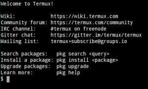
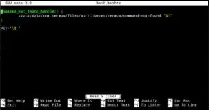
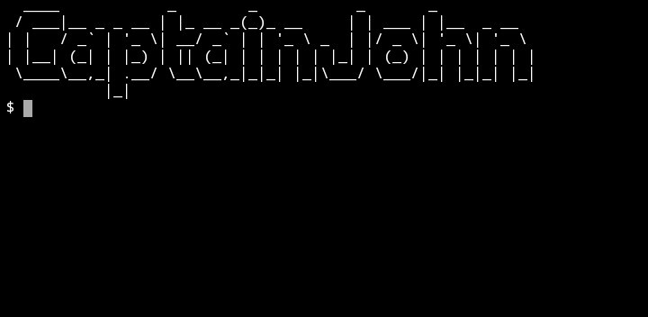

First of all, we have to remove the text that comes in the Welcome screen of Termux. As you open the Termux App, something like this already written.
How to Remove termux Welcome screen Text
Open Termux app and type-
cd ..lscd usr/etclsrm -rf motdOpen new terminal, and see the termux terminal is totally clear.
With the help of these commands, whatever text comes on the welcome screen of Termux will not come, you can see it by open new session or re-open the Termux.
How to Insert ASCII txt in your termux terminal
We have to type some commands to insert the ASCII text in the Termux terminal
Open new session in termux and type following commands :-
pkg install figletpkg install nanoagain new session open & type -cd..lscd usrlscd etclsnano bash.bashrc
After typing all these commands, this type of screen will open.
Now, in this screen you have to edit something.
Type these following commands-
figlet -f standard CaptainJohn
After, all processn now open new session or re-open the Termux.
Now we will change the font and text color in termux.
Make Termux terminal look Awesome. (Color, Font, Style)
Open new session in termux and type following commands :-
apt updateapt upgradeclearapt install curlsh -c "$(curl -fsSL https://github.com/Cabbagec/termux-ohmyzsh/raw/master/install.sh)"
Wait for complete installation and choose any option according to you.
For Example:
- type 0
- and restart termux app